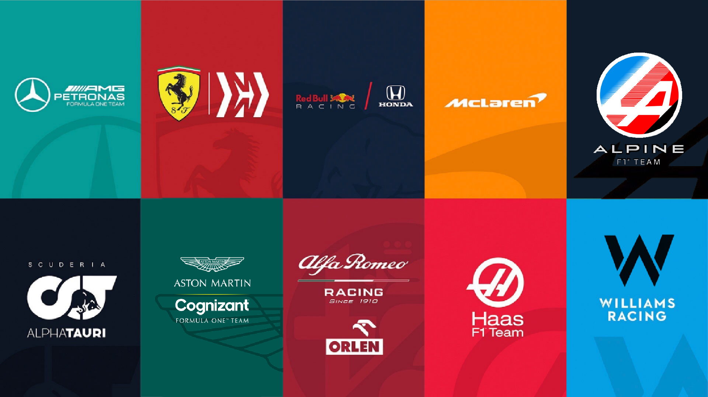

Formula 1
A Formula 1 a világ egyik legismertebb autóverseny-sorozata. A versenyeken a világ leggyorsabb együléses versenyautói vesznek részt. A pilótáknak nemcsak a sebességre, hanem a pontosságra és a megfelelő taktikára is figyelniük kell.
A versenyek során a technológia, a csapatmunka és a versenyzők tehetsége egyaránt fontos szerepet játszik. Egyetlen másodperc vagy egy jól időzített kerékcsere is eldöntheti a futam eredményét.
🏁 Csapatok
A Formula 1-ben több különböző csapat versenyez egymással. Minden csapat két versenyzőt indít, akik pontokat gyűjtenek a világbajnokság során.
A csapatok folyamatosan fejlesztik autóikat, hogy minél jobb eredményeket érjenek el. Minden istállónak saját színei, logója és egyedi versenyautója van.
- Red Bull Racing
- Ferrari
- Mercedes
- McLaren
- Aston Martin
- Williams
- Alpine
- Haas
- RB
- Audi
- Cadillac

🌍 Versenyhétvége
Egy Formula 1-es hétvége általában több részből áll. A versenyzők szabadedzéseken gyakorolhatnak, majd az időmérő edzésen eldől, hogy milyen sorrendből indulnak a vasárnapi futamon.
A versenyhétvége legizgalmasabb része maga a futam. A pilóták több körön keresztül küzdenek egymással a lehető legjobb helyezésért. A cél az, hogy elsőként haladjanak át a célvonalon.

🏆 A világbajnokság
A Formula 1-ben minden futam után pontokat kapnak a legjobb helyezést elérő versenyzők. Az idény végén az a pilóta lesz a világbajnok, aki a legtöbb pontot gyűjtötte össze.
A csapatok között is külön bajnokság zajlik. A szezon végén kiderül, hogy melyik csapat bizonyult a legeredményesebbnek.
❤️ Miért olyan népszerű a Formula 1?
A Formula 1 izgalmas versenyeket, látványos előzéseket és hatalmas sebességet kínál a rajongóknak. A különböző pályák, a híres versenyzők és a csapatok közötti rivalizálás minden versenyhétvégét különlegessé tesz.